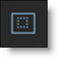
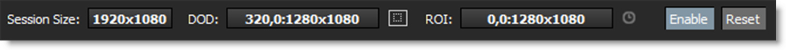
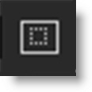

ROI (Region of Interest)
ROI (Region of Interest) crops the image in the Viewer to a user defined size and can be animated. This is especially useful when you only need to work within a smaller region of a larger image as it will use less memory and process faster. If expanded, the ROI will display overscan pixels which can then be manipulated.
Using a Smaller ROI for Performance
The ROI can be made smaller than the session size to speed up processing and save memory. This is especially useful when working with larger images.
1 Load some source footage and create a session.
2 Single-click in the center of the source node in the Trees window to view and edit it.
3 Display the ROI controls by clicking the ROI icon above the Viewer.
Once the ROI icon is activated, the ROI controls appear above the Viewer.
4 Make sure the Enable button is active.
5 Drag one of the corner points to size the ROI.
Note: You can also Ctrl/Cmd-Shift-drag a square region in the Viewer to draw a ROI region.
6 Move the ROI by clicking and dragging its bounding box.
7 Animate the ROI by enabling the Animate icon and adjust the ROI at various frames.
8 To avoid moving the ROI by mistake after it has been set, disable the Viewer > ROI icon.
This hides the ROI controls, but it is still active.
Note: To temporarily turn off the ROI effect, toggle the Enable icon.
9 To render the ROI, make sure that Render ROI is enabled in the Render Options.
Using the ROI to Reveal Overscan Pixels
If the source’s DOD (Domain of Definition) is larger than the session, the ROI can expand to reveal overscan pixels which can then be manipulated.
1 Load some source footage whose DOD is larger than the session you are working in.
2 Single-click in the center of the source node in the Trees window to view and edit it.
3 Display the ROI controls by clicking the ROI icon above the Viewer.
Once the ROI icon is activated, the ROI controls appear above the Viewer.
4 Make sure the Enable button is active.
5 Click the Set ROI to DOD icon in the Viewer.
The ROI will automatically be set to match the size of the source’s DOD and will reveal any overscan pixels.